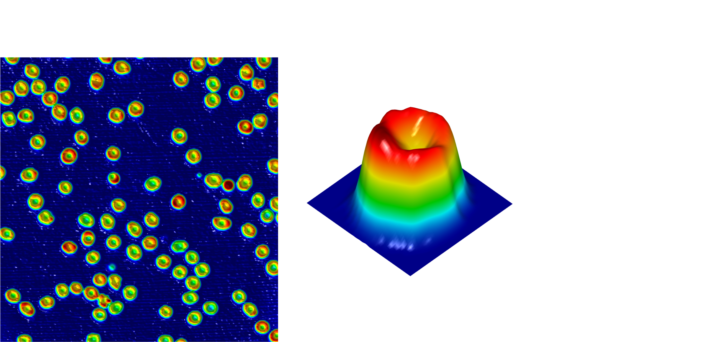
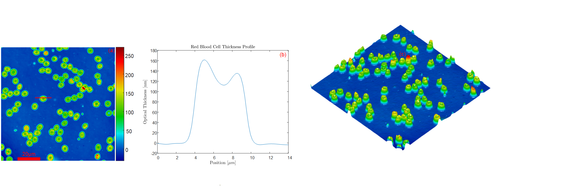

Visualization and Quantification of Red Blood Cell Membrane Fluctuation with Motion Amplification
Joseph Thomas, Yiyan Ruan, Ryan Yih-Yun LiuFall 2021 ECE 4554/5554 Computer Vision: Course Project
Virginia Tech
Abstract
The cell membrane of red blood cells is known to fluctuate, and the nature of its fluctuation can offer insight into cell health and function. This membrane fluctuation is typically small and difficult to visualize through simple observation. Phase-based video motion amplification was applied to red blood cells imaged with quantitative phase microscopy, a light microscope modality that measures cell thickness. Motion amplification applied to the cell thickness images of red blood cells in solution visualized cell membrane fluctuation and bulk cell movement impercetible in the original video data.

Introduction
Red blood cells (RBCs) are a crucial component of biological systems and support a variety of biological processes. Their function is directly tied to their mechanical properties. The mechanical properties of RBCs depend heavily on their cell membrane, which is know to exhibit flickering or fluctuation in solution. This membrane fluctuation is related to the solution salinity and the level of ATP present in the cell [1]. Because the mechnical properties and therefore metabolic action of the red blood cell is directly related to its membrane, a method to quantify and visualize the membrane fluctuation could yield important information about RBCs and their condition.A microscope modality to which the authors have access is Quantiative Phase Imaging (QPI). QPI uses light interference to measure the optical thickness of transparent samples. Red blood cells are an excellent candidate to image with QPI as they are largely transparent and exhibit minimal light scattering. In particular, the QPI modality that will be used in this work is Spectral Modulation Interferometry (SMI) [2]. SMI exhibits sub-nanometer sensitivity in the determination of sample thicknesses, and it allows for imaging rates of up to 120 frames per second. With its high imaging rate and excellent thickness sensitivity, SMI is a great candidate to monitor the small membrane fluctuation of RBCs. An example SMI image of red blood cells is shown below. Subfigure (a) shows the thickness image of red blood cells in an isotonic phosphate-buffered saline (PBS) solution suspended on a mirror for imaging. The optical thickness of one RBC in (a) is plotted across space in (b). The discocyte (donut-shaped) nature of RBCs in isotonic solution can be observed. The thickness image can also be rendered in 3D as in (c).

Typically, these membrane fluctuations are small compared to the size of the cell and are therefore difficult to visualize. The membrane fluctuation can even be a sub-pixel change in a recorded image of RBCs. A computer vision technique that could extract the sub-pixel membrane fluctuation could outperform simple methods to monitor the fluctuation. Namely, "Phase-based Video Motion Processing" [3] is such a technique that can both quantify the amplitude and direction of subpixel motions in a video and also amplify these motions via reconstruction for visualization. Various approaches and applications have been developed and used for video motion amplification to highlight small motions in videos invisible to simple observation [4-6]. Thus, this project proposes the use of phase-based motion amplification to quanity the membrane-fluctuation of live RBCs as well as amplify these motions in a reconstructed video for visualization.
Approach
To quantify and amplify the small and even sub-pixel changes in a microscope video of red blood cells, we applied phase-based motion amplification by Wadhwa et al. In this method, complex-steerable image pyramids are deconstucted from each frame of the input video. These steerable pyramids give information about the local spatial frequency components in the input frame.A Gabor filter bank is generated at different wavelengths and orientations. The Gabor filter, a complex sinusoid windowed by an elliptical 2D Gaussian function, provides magnitude and phase information about the input image in the neighborhood of the spatial filter. Similar to the Discrete Fourier Transform, the Gabor filter is a decomposition of the original image frame into a magnitude and phase image, where the magnitude describes the cross-correlation of the image frame with the particular wavelength used to generate the Gabor filter. The phase response of the filter describes the phase that is most highly correlated to the Gabor filter window. Similar to applying the 2D Discrete Fourier Transform to the image frame, the Gabor filter bank decomposes the image into its spatial frequency content. However, as the Gabor filtering is performed via a sliding 2D convolution, the resultant magnitude and phase responses are images, rather than scalar values. Thus, the spatial frequency amplitude and phase can be described heterogeneously throughout each input frame.
A Gabor filter bank is generated in Matlab via the built-in function "gabor" which accepts parameters 'wavelength' and 'orientation', in units of pixels and degrees, respectively. The wavelength parameter sets the period of the complex sinusoid of the filter window. The orientation parameter describes the direction of which the Gabor window has the sinusoidal variation. For the quantiative phase images of human red blood cells, best motion amplification results were found with 7 unique orientations and 5 unique periods. The orientations were [0, 30, 60, 90, 120, and 150] degrees. The wavelengths used were [2, 3 4, 5, and 6] pixels. Thus, 30 different Gabor filters were used to construct the filter bank. The Gabor filters generated are shown below in below figure matrix. Pixel period varies across rows of the figure, while different filter orientations are shown along the colimns. Matlab's "gabor" function generates Gaussian windowed sinusoids with elliptical Gaussian windows. In other words, the envelope of the filter is faster in the direction of the sinusoidal variation than along lines of equal phase. By default, and as used in this work, the aspect ratio of the elliptical Gaussian is 0.5.
Gabor filter bank


Amplitude reponse


Phase reponse


With the phase reponse of the Gabor filter bank to each frame of the input video extracted, the spatial phase can be plotted through time. This phase corresponds qualitatively to the lateral shift of the local spatial frequency content measured by the filters in the bank. For example, if the input image is a Dirac-delta function which shifts laterally across video frames, the phase of the impulse response of each Gabor filter in the bank will change proportionally to the lateral displacement. The below figure shows the spatial phase of the 0 degree orientation 2 pixel wavelength filter bank across time. This phase curve was extracted for a position on the lobe of one of the red blood cells. It is clear from this curve that the motion of the spatial frequency content is largely linear with time, as there is a consistent drift of the cell in the field of view, but it also varies atop the linear curve, which corresponds to the side-to-side motion of the red blood cell characteristic of live cells in an isotonic solution. This phase curve is crucial to understand the phase-based motion amplification approach. As the lateral shift of image features in the video stream is described by the phase curve through time, modifying this phase curve with an amplification or attentuation factor will increase or decrease motion in the reconstructed video stream. To amplify the lateral motions in the video stream the below procedure was followed:
First, extract the initial phase response of each Gabor filter bank. This defines the starting position of all spatial frequencies across the image in the video stream.
Next, calculate the shift in phase relative to the initial time point for all later frames.
For amplification, multiply the phase shifts relative to the initial time point by an amplification factor.
&emsp Add the amplified phase curves to the initial phase so that the amplified video stream starts in the same positions as the original video stream.
The below figure shows the original phase curve for the 0 degreee orientation, 2 pixel Gabor filter for one of the red blood cells. The figure also shows the phase curve with a 5X amplification factor. It is clear that both phase curves start from the same point, so that the amplified and original video streams will have the same initial positions. It is then also clear that the amplified phase shifts through time exceed the original.

Results
The above described motion amplification procedure was applied to 50 frames of quantiative phase microscopy data captured with SMI. The framerate of the recording system was 120fps; thus, the 50 video frames correspond to ~0.4s of true time. The original and amplified video streams are showed simultaneously in a loop. A particular cell was extracted for plotting its vertical profile as demarked by the red line in the image. The cell vertical image profile was plotted simultaneously for both the original video stream and the video stream with 5X motion amplification.It is clear from the below figures that the motion amplified video stream visualizes motions that are near impossible to see in the original video. In the plot of the original video, some difference between the first frame and the last frame (~0.4s later) in the lateral position of the cell. In the amplified plot, it is clear that the final lateral position of the cell is much further than the original video. Small motions during the large displacement are seen as well in the amplified plot.
Dicussion
As mentioned in [3], there are implementation tradeoffs in the phase-based motion amplification procedure. First, it is clear that the reconstruction of the original image frames, even without amplification, is not perfect. The Gabor filter creates a high-pass filtering effect where the smooth edges of the red blood cell have a zero-crossing in the amplified video. Reconstruction artifacts are also visible due to the final orientations of the Gabor filter interacting with the disc shaped red blood cells. A "halo" effect appears in the reconstructed video frames surrounding the cells, which is the result of the Gabor filters being applied at discrete angles. Using many more orientations of Gabor filters would smooth the halo into a ring, whereas using more pixel wavelengths of the filters, or even subpixel interpolated filters, would remove the zero-crossing artifacts at the cell edges.To improve the reconstruction, more orientations and spatial wavelengths for the Gabor filter bank should be used. We were limited to 30 filters for this work as each filter outputs a magnitude and phase image both the size of the input frame. Thus, each frame in the video stream has 60 frames in the Gabor pyramid of the same size. Thus, there were computer memory limitations when processing the 50 temporal frames of the video. Using more memory, or optimizing the program to save each frame to the disk, rather than holding each frame in memory simultaneously, would allow for a larger Gabor pyramid and thus a more overcomplete reconstruction.
Further, the scale of the image amplitude is not preseverd. The original video stream is a height map of the red blood cells in units of nanometers, where each cell is approximately 160nm tall. In the amplified image, the amplitude reaches ~2000. Thus, extra care must be taken to ensure the scale of the image frames are preserved, which would be necessary for quantiative considerations of the image data. This step was not taken in this work, as the primary motivation was to visualize the motion amplification. As well, the phase-based motion amplification procedure is normally performed on images recorded with a camera, rather than a quantitative phase microscope, where image amplitude scaling is not a concern.
Conclusion
This report demonstrates the implementation and application of phase-based motion processing for the visualization of small motions in microscopy images. Specifically, 0.4s of video was recorded at 120fps using Spectral Modualation Interferometry to generate height map images of live red blood cells. The red blood cell motion is invisible in the orignal video frames. The motion application approach using a bank of 30 Gabor pyramids of motion amplification and reconstruction reveals the small motions inherent to the live cells.References
1. J. Evans, W. Gratzer, N. Mohandas, K. Parker, and J. Sleep, "Fluctuations of the Red Blood Cell Membrane: Relation to Mechanical Properties and Lack of ATP Dependence," Biophys. J. 94, 4134–4144 (2008).2. R. Shang, S. Chen, C. Li, and Y. Zhu, "Spectral modulation interferometry for quantitative phase imaging," Biomed. Opt. Express 6, 473 (2015).
3. N. Wadhwa, M. Rubinstein, F. Durand, and W. T. Freeman, "Phase-based video motion processing," ACM Trans. Graph. 32, 1–10 (2013).
4. H.-Y. Wu, M. Rubinstein, E. Shih, J. Guttag, F. Durand, and W. T. Freeman, "Eulerian Video Magnification for Revealing Subtle Changes in the World," 8 (n.d.).
5. N. Wadhwa, M. Rubinstein, F. Durand, and W. T. Freeman, "Riesz pyramids for fast phase-based video magnification," in 2014 IEEE International Conference on Computational Photography (ICCP) (IEEE, 2014), pp. 1–10.
6. M. A. Elgharib, M. Hefeeda, F. Durand, and W. T. Freeman, "Video magnification in presence of large motions," in 2015 IEEE Conference on Computer Vision and Pattern Recognition (CVPR) (IEEE, 2015), pp. 4119–4127.